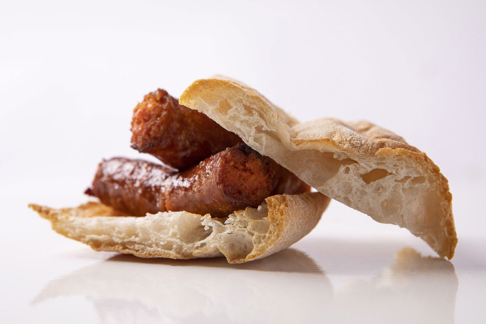

Recetas con espárrago de Navarra
- Espárragos de Navarra con huevo escalfado y velouté de jamón
- Espárragos de Navarra con vinagreta de guindilla
- Menestra de verduras de Navarra
Pimiento del piquillo de Lodosa
-
Su gran calidad y su especialísimo sabor le distingue de otros pimientos y goza del reconocimiento internacional figurando en el Registro Europeo de Denominaciones de Origen de Productos Agrícolas, poseyendo una serie de características que lo hacen único.
- Desarrollo vegetativo alto, desde el nacimiento hasta su parte más alta.
- Fruto maduro de color rojo intenso.
- Forma triangular, con 2 ó 3 caras y acabado en una punta incisiva ligeramente curva.
- Aunque es una planta originaria de América del Sur, el del Piquillo de Lodosa es un ecotipo de la variedad Piquillo, autóctono de Navarra, que en el término geográfico que lleva su nombre y en los municipios colindantes alcanza su máxima calidad gustativa.
- El Piquillo de Lodosa en conserva, además de saludable y equilibrado, resulta muy práctico, ya que permite preparar deliciosos platos en muy pocos minutos.
Ingredientes culinarios típicos de Navarra
- Carnes y pescados
- Entre las carnes se tiene el cerdo, que participa en embutidos como el chorizo de Pamplona, en las chuletas a la navarra o las magras a la navarra y a la pamplonesa.Uno de los embutidos más típicos de Navarra es la chistorra, que se trata de un chorizo con un calibre menor del habitual.
- Verduras y hortalizas
- La cocina Navarra posee varias denominaciones protegidas y de origen entre sus productos hortofrutícolas. Entre las múltiples hortalizas y verduras se encuentran los espárragos de Navarra, los cogollos de Tudela, el pimiento del piquillo de Lodosa y la alcachofa de Tudela.
- Lácteos
- La cocina navarra se beneficia de una oferta de quesos, generalmente elaborados frescos. Destacan desde el siglo XX especialmente 'los quesos de Roncal e Idiazábal'.
Recetas interesantes a realizar con Pimiento del Piquillo de Lodosa
| Nombre del plato | Descripción |
|---|---|
| Buñuelos de Queso Idiazabal y langostinos con mermelada artesana de pimiento Piquillo de Lodosa | Entrante para 3 comensales (1 hora). Buñuelos fritos elaborados con queso Idiazabal DOP rallado y langostinos picados, ligados con huevo, harina y levadura, perfumados con ajo y perejil, y acompañados de una mermelada artesana de Piquillo de Lodosa, azúcar y vinagre de manzana. |
| Sopa de Pimientos del Piquillo al azafrán | Cena o plato principal para 4 comensales (60 minutos). Sopa de Pimientos del Piquillo de Lodosa y tomate sofritos con cebolla y ajo en aceite de oliva virgen extra, ligada con almendras y pan, sazonada con azafrán y un toque de cayena, y rematada con huevo campero y pasta menuda. |
| Risotto de Piquillo de Lodosa, Idiazabal ahumado y espárrago | Entrante para 4 comensales (45 minutos). Risotto de arroz bomba ecológico cocinado con caldo de pollo y Pimientos del Piquillo de Lodosa, incorporando láminas y puntas de espárrago verde fresco, y fundido con queso Idiazábal ahumado y parmesano. |
| Croquetas de pollo y pimientos del Piquillo de Lodosa | Entrante. Croquetas elaboradas a partir de una bechamel de mantequilla y harina de trigo cocida con leche, a la que se añaden pechugas de pollo previamente hechas a la plancha y picadas, junto con Pimientos del Piquillo de Lodosa; finalmente se rebozan en huevo y pan rallado y se fríen. |
Multimedia sobre la gastronomía de Navarra
